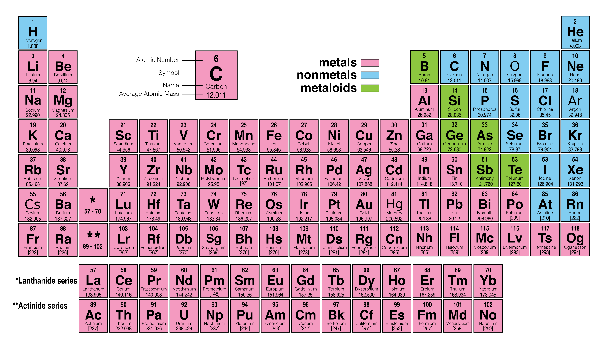
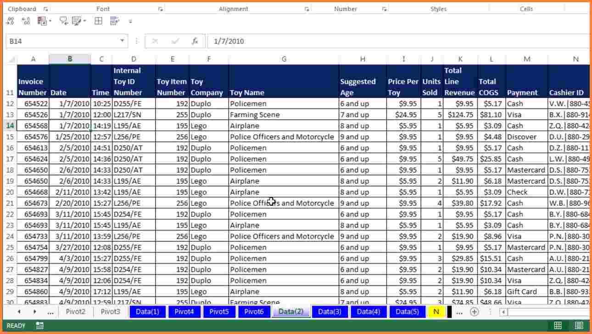

| Name | Surname | Favorite Sauce | Home Town |
|---|---|---|---|
| Jarod | Britz | Chutney | Cape Town |
| Rustin | Cassiem | Peri-Peri | Cape Town |
| Jamie-lee | Cupido | Perinaise | Cape Town |
| Ridhaa | Cupido | Tomato | Cape Town |
| Reece | Dodgen | Nandos Peri-Peri | Cape Town |
| John-Paul | Golding | Chutney | Cape Town |
| Claire | Jacobs | Mushroom | Cape Town |
| Miguel | Jacobs | Nandos Peri_Peri | Cape Town |
| Speciose | Kamanzi | Mushroom | Cape Town |
| Claude | Kinga | Tabasco | Johannesburg |
| Odwa | Kula | BBQ | Cape Town |
| Chad | Masella | Tomato | Cape Town |
| Diteboho | Moahloli | Chutney | Cape Town |
| Michael | Notoyahawa | Tomato | Cape Town |
| Jadon | Paulse | BBQ | Cape Town |
| Umr | Rajab | White | Cape Town |
| Abnuto | Samuels | Chilli | Cape Town |
| Sithule | Thsangana | Sweet Chilli | Cape Town |
| Vicario | Williams | Sweet Chilli | Cape Town |
| Jean | Windvogel | Mushroom sauce | Cape Town |
| Aqueela | Taljaard | Mayonaise | Cape Town |
Tables are widely used in many areas of our lives. Inserting data in a table makes the data appear neater. Let's talk about how tables are published in Economics textbooks and journals. One of the sections of Economics here tables are widely used is in Game Theory, or more soecifically, Nash Equilibrium.

The most commonly known table is the Periodic table of elements. This is an academic table used in the subject of Physical Sciences (which I studied at school) in schools and universities
We also get logic truth tables like the one below. This table is often used in mathematics.
Another table that is used in mathematics that we learned very early on in school is our times tables or multiplication tables.
Lastly, we use tables widely in Microsoft Excel. The crazy thing is that we can create a table with excel, but the cells in excel already form a table.
In conclusion, tables are used basically to hold and store data neatly and more professionally
.